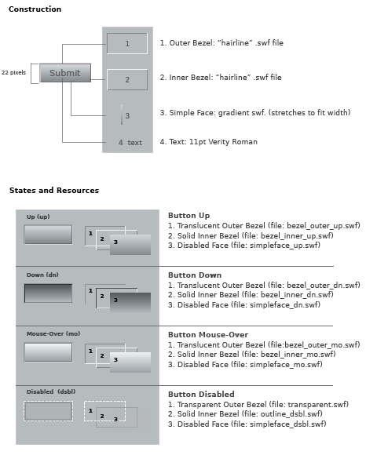
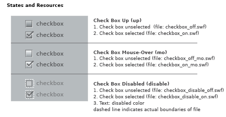
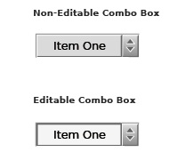
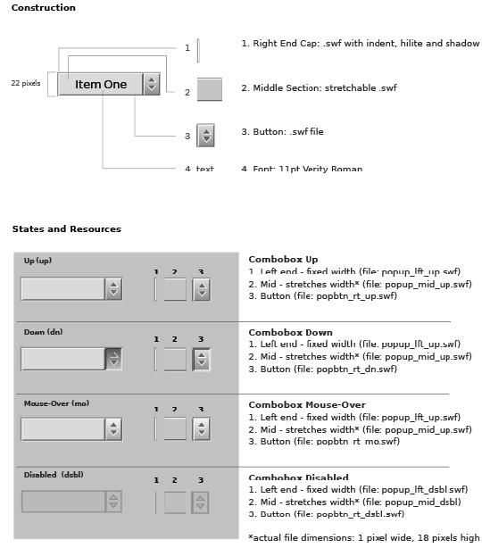
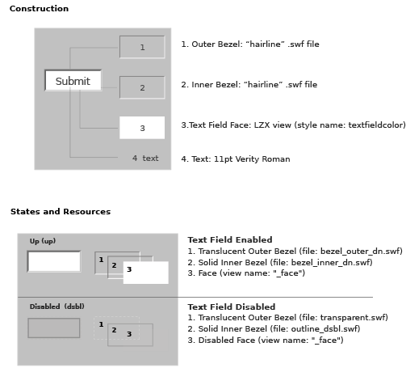
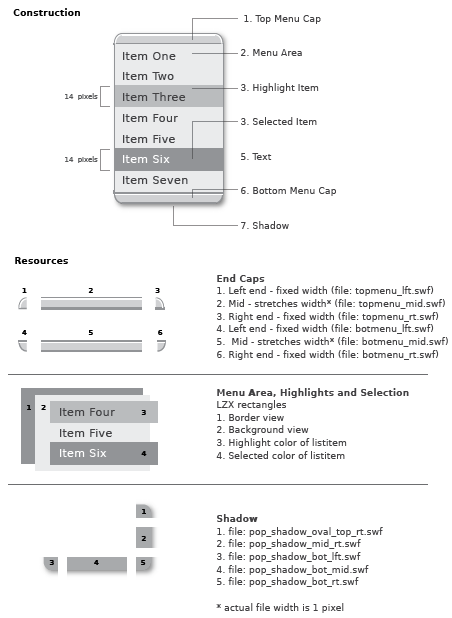

Using Laszlo Components
This chapter, under construction, explains how various of the Laszlo built-in components were constructed.
Explain that Laszlo ships with a bunch of built-in components, which are explained in this
chapter. A later chapter explains how to roll your own.
Overview
some content here? Otherwise remove this section.
Button
The default component button has a height of 22 pixels and a width determined
by the length of the button text and its padding. The button face is 18 pixels
tall with 2 pixel borders for the bezels. The type is centered on the button
face. The button is comprised of scalable vector resources which enable disproportional
resizing without distortion. Resizing the button does not alter the text size.
The button can also contain an icon image with or without text included
The button form is constructed of four views. The views are:
- The "Outer Bezel" creates an indented area around the button
- The "Inner Bezel" defines the edges of the button
- The "Simple Face" is the face of the button.
- The "Text" for the button label -11 pt Verity Roman
An icon or image can be used with text or alone.
Views 1-3 are constructed as multiple frame resources which change based on
the state of the button. (See the state reference page and the chapter on
states chapter of the Developer's Guide for more about this feature of LZX.)
The outer and inner bezels (and each of their states) are constructed of a "hairline" .swf
file with two different colored strokes on each rectangle. These files were
built using the Flash authoring tool, and take advantage of a feature of the
.swf file format that is not supported in other vector-based programs (such
as Adobe Illustrator). Hairline strokes created in Flash will retain their
weight regardless of scaling
An unfortunate effect of this technique is that a "hairline"
only retains its width when decreasing scale. Scaling a "hairline" up
will scale the thickness of the stroke. In an effort to work around
this, the assets for both outer and inner bezels (and their states)
are set at the overly large size of 500x500 pixels.
. This means that using a size other than the
default will not distort the look of the button. Although transparent, the
disabled state of the button (which is visually smaller) retains the Outer
Bezel to insure alignment with the other resources.
The face view contains a .swf resource which is a vector gradient acting as
the face of the button. There are four separate files for each of the button states,
each with its own gradation and opacity. These files are saved as one pixel wide
by 18 pixel high (default face height) resources and are scaled horizontally
to the width of the button.

<canvas height="550" bgcolor="0xeaeaea">
<font name="smallfont" src="verity/verity9.ttf"/>
<class name="box" extends="basecomponent"
focusable="false" height="10" width="10" />
<view x="40" y="40">
<view>
<simplelayout axis="y" spacing="2"/>
<button width="100">Cancel</button>
<text>button with width specified</text>
</view>
<view>
<simplelayout axis="y" spacing="2"/>
<button height="30">Click Me</button>
<text y="10">button with height specified</text>
</view>
<view>
<simplelayout axis="y" spacing="2"/>
<button isdefault="true">Submit</button>
<text>default button sized to text</text>
</view>
<view layout="axis:y; spacing:2">
<view layout="axis:x; spacing:40">
<button width="32" height="32">
<view resource="../icons/plane_icon.swf" x="5" y="5"/>
</button>
<button width="40" height="40" text="travel" text_y="24" font="smallfont">
<view resource="../icons/plane_icon.swf" x="9" y="4"/>
</button>
<button text_x="20" width="70" text="Search">
<view x="6" bgcolor="yellow" height="10" width="10" valign="middle"/>
</button>
</view>
<text y="8">icon buttons, with and without text</text>
</view>
<view>
<button id="left1" style="{basecolor:0xbbffbb}" text="foo" width="100"/>
<view >
<simplelayout axis="x" spacing="2"/>
<text>button tinted this hue </text>
<view height="12" width="12" y="2" bgcolor="black">
<box bgcolor="0xbbffbb" x="1" y="1"/>
</view>
</view>
<button id="left2" style="{basecolor:0xbbbbff}" text="foo" width="100"/>
<view>
<simplelayout axis="x" spacing="2"/>
<text>button tinted this hue </text>
<view height="12" width="12" y="2" bgcolor="black">
<box bgcolor="0xbbbbff" x="1" y="1"/>
</view>
</view>
<simplelayout axis="y" spacing="10"/>
</view>
<simplelayout axis="y" spacing="20"/>
</view>
</canvas>
Check Box
The default checkbox has a height and width of 15 pixels. The check box is
a scalable vector resource which enables proportional resizing without distortion.
Disproportional scaling will result in an odd check mark.
All resources in check box (including disabled state) have the same exterior
dimensions. Resources which appear to be smaller contain invisible rectangles
that surround the visible art. This ensures the resource frames automatically
register with one another, and will not need to be repositioned in code.
Check box is constructed as single resources for the various states. The placement
of associated text has been defined to compliment the default size. Text is
left-aligned and set to the right of the button. The disabled state, although
visually smaller, has the same dimensions as the enabled versions. A transparent
rectangle (indicated by white dashed line) insures alignment when a check box
changes state.

<canvas width="800" height="400" bgcolor="0xeaeaea">
<bluestyle name="bluecolors" canvascolor="null"/>
<greenstyle name="greencolors" canvascolor="null"/>
<view x="40" y="40">
<view>
<checkbox id="b" name="cb1" value="true" text="checked by default"/>
<checkbox id="c" name="cb2" enabled="false" text="disabled"/>
<checkbox id="a" name="cb3" style="bluecolors" text="a blue style checkbox"/>
<checkbox id="d" name="green" style="greencolors" text="I would like to see a green square"/>
<view width="40" height="40" bgcolor="green" visible="${d.value}"/>
<simplelayout spacing="16"/>
</view>
<view height="108" width="250" bgcolor="silver">
<view height="1" width="${parent.width}" bgcolor="0x7D7D7D"/>
<checkbox x="12" id="checkMe" text="Check me" value="true"/>
<view height="1" width="${parent.width}" bgcolor="0x7D7D7D"/>
<view x="20">
<button height="20" text="Toggle" onclick= "checkMe.setAttribute('value', !checkMe.value);"/>
<text text="${'value:' + checkMe.value}"/>
<simplelayout axis="x" spacing="6"/>
</view>
<view x="20">
<button height="20" text="Disable" onclick= "checkMe.setAttribute('enabled', false);"/>
<button height="20" text="Enable" onclick= "checkMe.setAttribute('enabled', true)"/>
<text resize="true" text="${'enabled:' + checkMe.enabled}"/>
<simplelayout axis="x" spacing="6"/>
</view>
<simplelayout axis="y" spacing="10"/>
</view>
<simplelayout axis="x" spacing="60"/>
</view>
</canvas>
ComboBox
The combobox is defined by three pieces:
- The button, which activates the menu (right side)
- The text area, containing the default menu item
- The menu (aka floating list)
The combo box contains an attribute to create either editable or non-editable
instances of this component. The button is the same for both versions and consists
of a multi-frame resource for the different states. The text area has a different
look for editable and non-editable versions. The floating list is the same
for both.
The default combo box has a height of 22 pixels and a width determined by
the length of the largest content item and its padding. The type is left aligned.


<canvas bgcolor="#EAEAEA" width="640" height="500">
<include href="lz"/>
<dataset name="items">
<item value="item1" >item one</item>
<item value="item2" >item two</item>
<item value="item3" >item three</item>
<item value="item4" >item four</item>
</dataset>
<dataset name="longdata">
<date>
<day>1</day>
<day>2</day>
<day>3</day>
<day>4</day>
<day>5</day>
<day>6</day>
<day>7</day>
<day>8</day>
<day>9</day>
<day>10</day>
<day>11</day>
<day>12</day>
<day>13</day>
<day>14</day>
<day>15</day>
<day>16</day>
<day>17</day>
<day>18</day>
<day>19</day>
<day>20</day>
<day>21</day>
<day>22</day>
<day>23</day>
<day>24</day>
<day>25</day>
<day>26</day>
<day>27</day>
<day>28</day>
<day>29</day>
<day>30</day>
<day>31</day>
</date>
</dataset>
<constantlayout axis="x" value="60"/>
<simplelayout axis="y" inset="60" spacing="60"/>
<view layout="axis: y; spacing :4">
<text multiline="true" width="350">The text that appears in the combobox may be different from the
value represented by that list item</text>
<view layout="axis: x; spacing :30">
<view layout="spacing:4">
<text>editable combobox</text>
<combobox id="cbox1"
width="130"
defaulttext="choose one...">
<textlistitem datapath="items:/item/" text="$path{'text()'}"
value="$path{'@value'}"/>
</combobox>
<text text="${'value: ' + cbox1.value}"/>
</view>
<view layout="spacing: 4">
<text>non-editable combobox</text>
<combobox id="cbox2"
width="130" editable="false">
<textlistitem datapath="items:/item/" text="$path{'text()'}"
value="$path{'@value'}"/>
</combobox>
<text text="${'value: ' + cbox2.value}"/>
</view>
</view>
</view>
<view layout="axis:x; spacing:10">
<text multiline="true" width="260">You can present a long list of
items but specify fewer "shownitems" and the list will be displayed
with a scrollbar. The combobox to the right has shownitems="7"</text>
<combobox y="10" width="40" editable="false"
dataoption="lazy" shownitems="7">
<textlistitem datapath="longdata:/date/day/text()"/>
</combobox>
</view>
</canvas>
Optimizing combobox startup time
If you will have more items in your list that appear to the user, you should
use dataoption="lazy". In this case the listitem will use lazy replication and
the list will use a dataselectionmanager, instead of a selectionmanager. Some
of the APIs for adding and removing items will not be available, but startup
time will be significantly faster. In general, you can modifiy
data through the data APIs, instead of using list methods. If you have created
your own listitem class you should read more about the datapath
replication attribute.
In the example below, only four textlistitem views are created,
even though there are ten
items in the dataset. (Note: if you declare a textlistitem with a child
datapath, you must set datareplication="lazy" on the datapath element
if you set dataoption="lazy" in the list. If you are using a datapath
attribute, that happens automatically.)
<canvas width="200" height="140">
<dataset name="mydata">
<numbers>
<option name="first"/>
<option name="second"/>
<option name="third"/>
<option name="fourth"/>
<option name="fifth"/>
<option name="sixth"/>
<option name="seventh"/>
<option name="eigth"/>
<option name="ninth"/>
<option name="tenth"/>
</numbers>
</dataset>
<combobox id="mycombo" shownitems="4" dataoption="lazy">
<textlistitem datapath="mydata:/numbers/option/@name"/>
</combobox>
<text text="${mycombo.value}"/>
<simplelayout spacing="4" inset="10"/>
<constantlayout value="10" axis="x"/>
</canvas>
Editable Text Field
The default edit text field, edittext, has a height of 22 pixels and a width of 106 pixels.
The field is comprised of scalable vector resources which enable disproportional
resizing without distortion. Resizing the edit text field will not alter the
text.
Edit Text is constructed of four views:
- The "Outer Bezel" creates an indented area around the field
- The "Inner Bezel" defines the recess of the field
- The "Face" is the background and center of the field
- The "Text" view which is contained in an input text field
Each of the first three views contains multiple resource frames which change
based on the state of the button.
The outer and inner bezels (and each of their states) are constructed of a "hairline" .swf
file with two different colored strokes on each rectangle. These files were
built using the Flash authoring tool, and take advantage of a feature of the
.swf file format that is not supported in other vector-based programs (such
as Illustrator). "Hairlines" created in Flash will retain their weight regardless
of scaling. This means that using a size other than the default will not distort
the look.
The face is an LZX view with a background color (bgcolor). The opacity and
bgcolor change between enabled and disabled states.

<canvas bgcolor="0xeaeaea" height="500">
<include href="lz/library.lzx" />
<dataset name="ds">
<item>first item from dataset</item>
<item>second item from dataset</item>
<item>third item from a dataset</item>
</dataset>
<view x="40" y="40" width="420" height="360" bgcolor="silver">
<constantlayout axis="x" value="20"/>
<simplelayout spacing="12" inset="20"/>
<edittext id="a">Name</edittext>
<edittext id="b" text="Address"></edittext>
<edittext id="c" text="555-555-1234"></edittext>
<view>
<text text="Notes:"/>
<edittext id="d" text="Multiline text displayed in an inputtext box with a defined width and height."
width="370" height="50" multiline="true"/>
<simplelayout spacing="2"/>
</view>
<view>
<simplelayout spacing="10" axis="x"/>
<text text="Username:"/>
<edittext id="d1"/>
<text text="Password:"/>
<edittext id="d2" password="true" text="password"/>
</view>
<view datapath="ds:/">
<constantlayout axis="x" value="15"/>
<simplelayout spacing="10"/>
<edittext width="150" datapath="item/text()"/>
</view>
</view>
</canvas>
Floating List
The floating list is used in conjunction with other components. Both combobox
and menu use this component.
The floating list is defined by six pieces:
- The end caps (constructed of 3 pieces each)
- The menu area
- List highlight
- List selection
- Text (icon can be used in place of text)
- The menu-shadow
The menu, highlight and selection areas are shapes defined in LZX code and
have no external resources. The border and background colors are attributes
which are defined in the floating list class and styles; both can be easily
customized. The highlight and selection are created by telling the list item
background color to change depending on interaction.
The end caps are rarely used together on one floating list and are each comprised
of three swfs: left, middle and right. The end caps are designed to scale horizontally.
Scaling the end caps vertically is not advised. Text is 11pt Verity Roman
The highlight and selected rectangles have a default height of 19 pixels and
a width determined by the width of the menu. The type is inset and left aligned
within the menu.
The menu shadow is a 5 piece view

. The shadow middle resources stretch in
both the direction of their orientation, and are constrained to the width and
height of the floating list. Shadows were constructed in Macromedia Flash using "Soften
edges" and a gradation of 100% black to 0% black.
The top right shadow resource has 3 frames that switch between states depending
on the context and position of the menu
The frames are:
pop_shadow_flush_top_rt.swf- no top cap (combo box, menu)
pop_shadow_corner_top_rt.swf- no top cap (submenus)
pop_shadow_oval_top_rt.swf- for use with the top cap